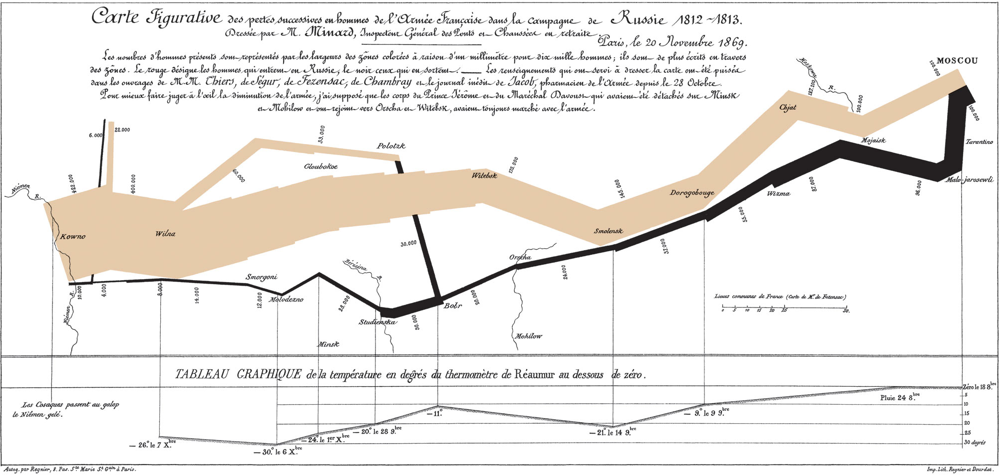

dates <- c("2025-01-01", "01/15/2025", "Feb 10, 2025")
as.Date(dates, format = "%Y-%m-%d") # fails on some formats[1] "2025-01-01" NA NA Fall 2025 | Instructor: Stephen Metts | PGUD 5160 - CRN 2247
Time operates as a dimension, index and ordering principle within data:
Point in time: a single event (e.g., eviction date)
Duration: a span (e.g., building construction period, start to finish)
Cycle: recurring intervals (e.g., seasons, months)
Trajectory: movement over time (e.g., route, growth)
When we visualize time, we make change visible.
Joseph Priestley — A Chart of Biography (1765)
First true timeline chart.
Each bar shows a person’s lifespan.
Features duration and overlap through position on a time axis.
Concept: Encoding lifespan as length → understanding concurrency of lives.
Joseph Priestley — A Chart of Biography (1765)
William Playfair — The Commercial and Political Atlas (1786)
Invented the line chart to show trade balance over years.
Introduced trend and change over time.
Concept: Time on the x-axis; values on y-axis → emergence of time series.
William Playfair — The Commercial and Political Atlas (1786)
Florence Nightingale — Coxcomb Diagram (1858)
Monthly data on deaths during the Crimean War.
Circular layout: each wedge = month; radius = deaths.
Highlights seasonality and preventable causes.
Concept: Time as a cycle (month → month).
Florence Nightingale — Coxcomb Diagram (1858)

Charles Joseph Minard — Napoleon’s March to Moscow (1869)
Combines time, geography, and quantity.
Line width = army size; path = geography; temperature line = retreat.
Time moves along the route.
Concept: Trajectory through time and space.
Charles Joseph Minard — Napoleon’s March to Moscow (1869)

Time is not just another variable — it’s a structural feature of reality that data tries to capture.
In data analysis, a dimension is a measurable axis of variation.
Time as a dimension lets us locate an observation in a sequence: when did something happen?
It provides context for change — just as space locates where, time locates when.
In time series, time acts like a row label or index that orders observations.
In data analysis, a dimension is a measurable axis of variation.
In a spreadsheet or dataframe, time stamps act as an index to the rows
The analysis often flows along this index — computing differences, trends, or moving averages.
Even when not a true numeric dimension, time orders categories or events.
Many datasets don’t measure time continuously but categorically:
Time provides sequence — useful for grouping or mapping.
Dimension → numeric & continuous → line charts, trends, regression
Index → ordering backbone → time series, lagged features, animations
Ordering principle → categorical → choropleths, grouped bars, faceted plots
lubridate > forcats > ggplot2
lubridate — parse, manipulate, and round dates.forcats — order months, seasons, and eras.ggplot2 — visualize time as line, bar, or cycle.R Date HandlingFunctions: as.Date(), Sys.Date(), format(), difftime()
Common problems:
R - Date Handling - Code Example #1
lubridate Package - Date Handling“The tidyverse way to handle messy time.”
Why use lubridate:
Simplifies parsing and arithmetic.
Integrates with tidyverse pipes.
lubridate Package - Date Handlingymd(),mdy(), ymd_hms().year(), month(), wday(), hour().date + days(7), interval(), floor_date().lubridate Package - Date Handling - Code Example #2lubridate Package - Date Handling - Mock Uplibrary(tidyverse)
library(lubridate)
# --- Dummy eviction-like data (10 rows) ---
# --- Date kept in typical character format
ev <- tibble(
case_id = 1:10,
BOROUGH = c("Manhattan","Brooklyn","Queens","Bronx","Staten Island",
"Manhattan","Brooklyn","Queens","Bronx","Manhattan"),
executed_date = c(
"2025-01-02","2025-01-03","2025-01-07","2025-01-12","2025-02-01",
"2025-02-03","2025-02-05","2025-03-15","2025-03-16","2025-03-20"
)
)
ev# A tibble: 10 × 3
case_id BOROUGH executed_date
<int> <chr> <chr>
1 1 Manhattan 2025-01-02
2 2 Brooklyn 2025-01-03
3 3 Queens 2025-01-07
4 4 Bronx 2025-01-12
5 5 Staten Island 2025-02-01
6 6 Manhattan 2025-02-03
7 7 Brooklyn 2025-02-05
8 8 Queens 2025-03-15
9 9 Bronx 2025-03-16
10 10 Manhattan 2025-03-20 lubridate Package - Date Handling - Mock Up Result| Eviction Records (Dummy Data) | ||
| Dates parsed with lubridate::ymd() for readable formatting | ||
| Case ID | Borough | Executed Date |
|---|---|---|
| 1 | Manhattan | Jan 2, 2025 |
| 2 | Brooklyn | Jan 3, 2025 |
| 3 | Queens | Jan 7, 2025 |
| 4 | Bronx | Jan 12, 2025 |
| 5 | Staten Island | Feb 1, 2025 |
| 6 | Manhattan | Feb 3, 2025 |
| 7 | Brooklyn | Feb 5, 2025 |
| 8 | Queens | Mar 15, 2025 |
| 9 | Bronx | Mar 16, 2025 |
| 10 | Manhattan | Mar 20, 2025 |
lubridate Package - Date Handling - Code Example #3library(tidyverse)
library(lubridate)
# --- Convert to Date ---
ev <- ev |>
mutate(executed_date = ymd(executed_date))
ev# A tibble: 10 × 3
case_id BOROUGH executed_date
<int> <chr> <date>
1 1 Manhattan 2025-01-02
2 2 Brooklyn 2025-01-03
3 3 Queens 2025-01-07
4 4 Bronx 2025-01-12
5 5 Staten Island 2025-02-01
6 6 Manhattan 2025-02-03
7 7 Brooklyn 2025-02-05
8 8 Queens 2025-03-15
9 9 Bronx 2025-03-16
10 10 Manhattan 2025-03-20 lubridate Package - Date Handling - Table Result| Eviction Records (Dummy Data) | ||
| Dates parsed with lubridate::ymd() | ||
| Case ID | Borough | Executed Date |
|---|---|---|
| 1 | Manhattan | Jan 2, 2025 |
| 2 | Brooklyn | Jan 3, 2025 |
| 3 | Queens | Jan 7, 2025 |
| 4 | Bronx | Jan 12, 2025 |
| 5 | Staten Island | Feb 1, 2025 |
| 6 | Manhattan | Feb 3, 2025 |
| 7 | Brooklyn | Feb 5, 2025 |
| 8 | Queens | Mar 15, 2025 |
| 9 | Bronx | Mar 16, 2025 |
| 10 | Manhattan | Mar 20, 2025 |
lubridate Package - Date HandlingContinuous vs categorical time → “binning time” (weeks, months, decades).
floor_date() to group daily events into consistent, comparable time periods — instead of treating every single date as unique.lubridate Package - Date Handling - Code Example #4library(tidyverse)
library(lubridate)
# --- Weekly bin (Monday start) ---
ev_weeked <- ev |>
mutate(week = floor_date(executed_date, "week", week_start = 1))
ev_weeked# A tibble: 10 × 4
case_id BOROUGH executed_date week
<int> <chr> <date> <date>
1 1 Manhattan 2025-01-02 2024-12-30
2 2 Brooklyn 2025-01-03 2024-12-30
3 3 Queens 2025-01-07 2025-01-06
4 4 Bronx 2025-01-12 2025-01-06
5 5 Staten Island 2025-02-01 2025-01-27
6 6 Manhattan 2025-02-03 2025-02-03
7 7 Brooklyn 2025-02-05 2025-02-03
8 8 Queens 2025-03-15 2025-03-10
9 9 Bronx 2025-03-16 2025-03-10
10 10 Manhattan 2025-03-20 2025-03-17lubridate Package - Date Handling - Code Example #4| Evictions with Weekly Bins (Dummy Data) | |||
| Weeks computed via lubridate::floor_date(executed_date, 'week', week_start = 1) | |||
| Case ID | Borough | Executed Date | Week (Mon start) |
|---|---|---|---|
| 2 | Brooklyn | Jan 3, 2025 | Dec 30, 2024 |
| 1 | Manhattan | Jan 2, 2025 | Dec 30, 2024 |
| 4 | Bronx | Jan 12, 2025 | Jan 6, 2025 |
| 3 | Queens | Jan 7, 2025 | Jan 6, 2025 |
| 5 | Staten Island | Feb 1, 2025 | Jan 27, 2025 |
| 7 | Brooklyn | Feb 5, 2025 | Feb 3, 2025 |
| 6 | Manhattan | Feb 3, 2025 | Feb 3, 2025 |
| 9 | Bronx | Mar 16, 2025 | Mar 10, 2025 |
| 8 | Queens | Mar 15, 2025 | Mar 10, 2025 |
| 10 | Manhattan | Mar 20, 2025 | Mar 17, 2025 |
Lubridate + forcats Date Handling - Code Example #5library(dplyr)
library(lubridate)
library(forcats)
library(ggplot2)
# Derive month from the weekly date and keep it ordered Jan–Dec using lubridate::month()
ev_monthly <- ev_weeked |>
mutate(month = month(week, label = TRUE, abbr = TRUE)) |>
count(month, name = "evictions")
# Quick check plot: bars will appear in calendar order
ggplot(ev_monthly, aes(month, evictions)) +
geom_col()Lubridate + forcats Date Handling - Code Example #6library(dplyr)
library(lubridate)
library(forcats)
library(ggplot2)
# Reorder Months via fct_relevel
ev_monthly_random <- ev_monthly |>
mutate(month = fct_relevel(month, c("Dec","Mar","Jan","Feb")))
# Quick check plot: bars will appear in new order
ggplot(ev_monthly_random, aes(month, evictions)) +
geom_col()Lubridate + forcats Date Handling - Code Example #6Reorder boroughs by total evictions (most → least)
Why: Legends and facets are clearer when categories are ordered by relevance. fct_reorder() sorts factor levels by a summary of a numeric vector.
Lubridate + forcats Date Handling - Code Example #6Line: treats time as a continuous index → shows trend/tempo clearly.
Bar: aggregates to intervals (months) → easy to compare totals.
Cycle: treats months as a repeating season → highlights periodic patterns (think Nightingale’s coxcomb).
ev_monthly_cycle <- ev_weeked |>
mutate(month = month(week, label = TRUE, abbr = TRUE)) |>
count(month, name = "evictions")
ggplot(ev_monthly_cycle, aes(month, evictions)) +
geom_col() +
coord_polar() +
labs(
title = "Seasonality: Evictions by Month (Polar Cycle)",
x = NULL, y = NULL
) +
theme_minimal()In the faceted map or chart, time is encoded as a continuous variable within each small plot (e.g., weekly or monthly evictions on the x-axis).
Each facet isolates space (a borough) while allowing time to unfold horizontally inside it.
#Weekly counts per borough
ev_week_counts_boro <- ev_weeked |>
count(BOROUGH, week, name = "evictions") |>
arrange(BOROUGH, week)
#Faceted line chart
ggplot(ev_week_counts_boro, aes(week, evictions)) +
geom_line() +
labs(title = "Evictions per Week — Faceted by Borough", x = NULL, y = "Evictions") +
facet_wrap(~ BOROUGH, ncol = 3, scales = "free_y") +
theme_minimal()
{kind=link}